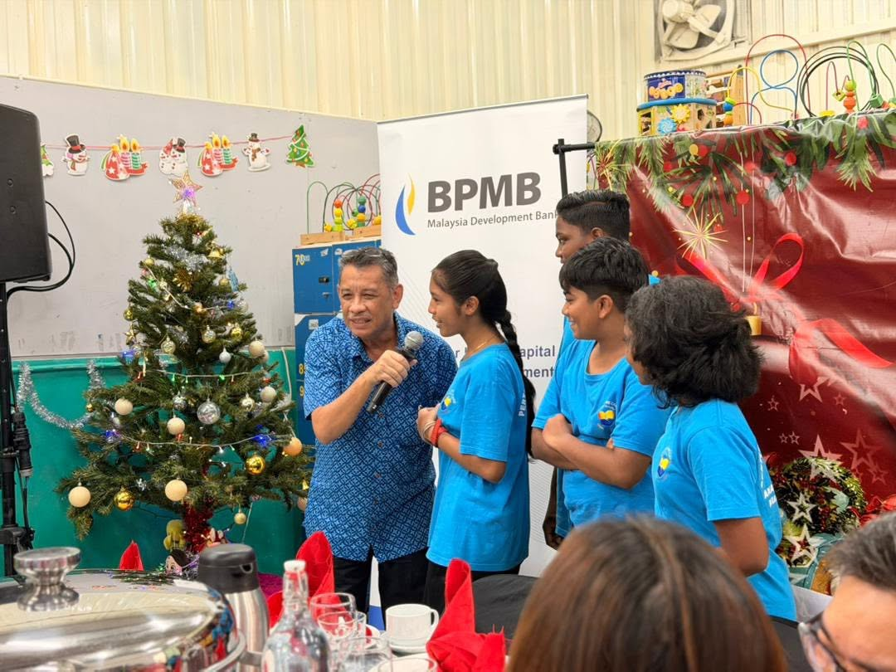
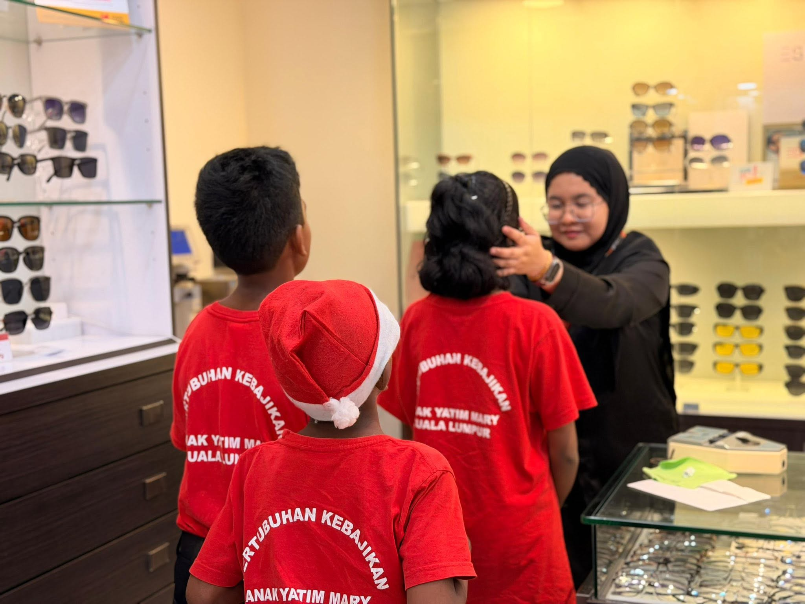
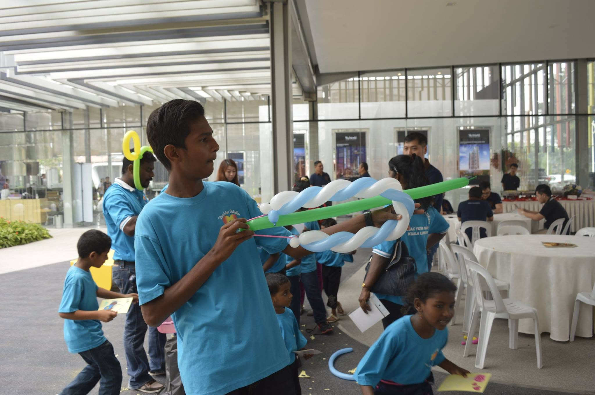
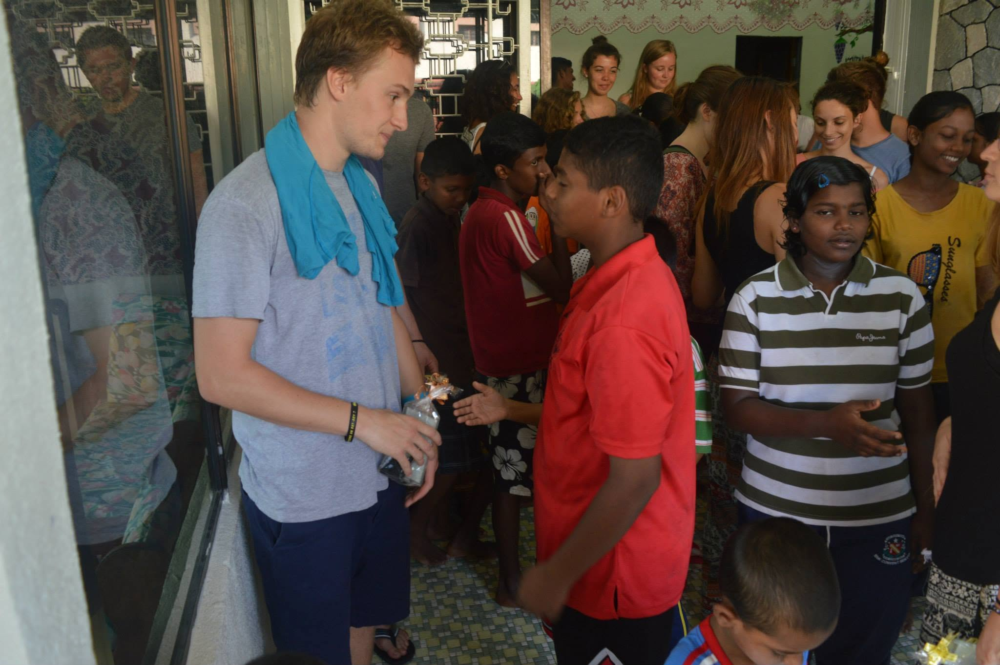

Pre-Christmas Celebration
A festive gathering organised with a corporate partner bank, complete with games, gifts and a shared meal for all the children.

A loving home for every child, a family for life.
Beyond shelter and meals, we nurture growth through daily activities
Children at Rumah Kasih Mary take part in a mix of academic, recreational and spiritual activities that build character and confidence. Younger children attend nearby kindergartens and primary schools, while older children pursue secondary education, vocational training and diploma studies. Everyday life includes:
A glimpse of recent celebrations and community partnerships

A festive gathering organised with a corporate partner bank, complete with games, gifts and a shared meal for all the children.

Free eye check-ups and community care activities held in partnership with a local mall and an optical eyecare provider.

An outdoor day of friendly games and team sports, giving the children a fun break to bond with volunteers and each other.
Click any photo to view it in full size
Volunteers play an important role in the daily life of the home. Whether it is tutoring, mentoring, organising events, or simply spending an afternoon playing with the children, your time and effort can bring hope and joy into their lives.
Interested individuals and groups are welcome to reach out through our Contact page to arrange a visit or a volunteering session.
Join as a Volunteer
| Day | Activity |
|---|---|
| Monday - Friday | School, followed by homework and tuition support in the evening. |
| Saturday | Household chores, extra-curricular classes and recreational activities. |
| Sunday | Family worship, rest, and time for volunteers or visiting sponsors. |